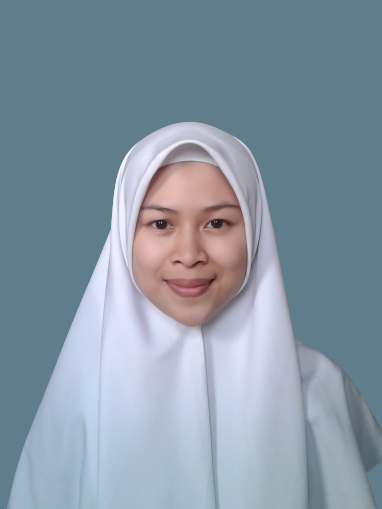

Curriculum Vitae

Ringkasan Profil
Lulusan SMA jurusan IPA. Saat ini sedang menempuh pendidikan di STT Terpadu Nurul Fikri program studi Sistem Informasi. Latar belakang yang kuat dalam pendidikan Islam. Memiliki kemampuan pada aspek akademik. Mampu membaca Al-Quran dengan baik. Berkepribadian baik, jujur, tekun, dan menyukai kerapian.
Biodata
- Nama : Hasna Alaurrahman
- Tempat, Tanggal Lahir : Jakarta, 15 Maret 2001
- Jenis Kelamin : Perempuan
- Kewarganegaraan : Indonesia
- Agama : Islam
- Alamat : Kp. Warung Ceuri RT 03 RW 02 Kec. Cicurug Kab. Sukabumi, Jawa Barat. 43359
- Email : alaurrahmanhasna@gmail.com
- Github :my ghithub
Riwayat Pendidikan
| Tahun | Pendidikan |
| 2003-2007 | TK IT Al-Husna |
| 2007-2013 | SD IT Al-Husna |
| 2013-2016 | SMP IT Al-Husna |
| 2016-2019 | SMA IT Adzkia |
| 2016-2019 | SMA IT Adzkia |
| 2020(sekarang) | STT Terpadu Nurul Fikri |
Keterampilan
- Ms.Word
- Ms.Power Point
- Hand Lettering
- Crafting
- Cooking
Prestasi
- Tahfidz Al-Quran: Sertifikasi Tahfidz Al-Quran Juz 25-30 dengan predikat Mumtaz.